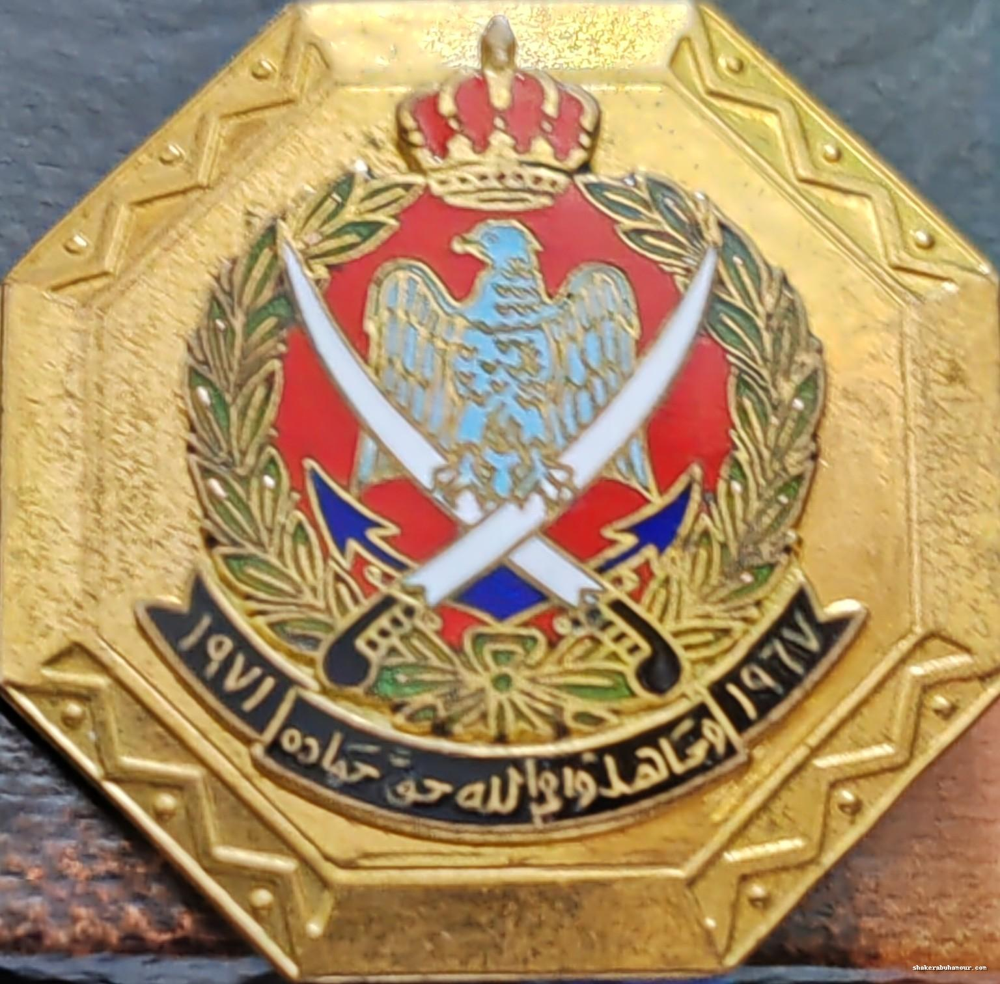

شارة رسمية تُمنح من قبل القوات المسلحة الأردنية – الجيش العربي، تقديرًا للعسكريين الذين خدموا خلال الفترة من 1967 إلى 1971، وهي فترة حساسة من تاريخ الأردن شهدت أحداثًا مفصلية أبرزها:
(وَجَاهِدُوا فِي اللَّهِ حَقَّ جِهَادِهِ)
تخليد ذكرى الخدمة في تلك المرحلة التاريخية الحساسة، وتكريم الجنود والضباط الذين ثبتوا في مواقعهم، سواء في الخطوط الأمامية أو في المجالات الإدارية والإعلامية واللوجستية، دفاعًا عن السيادة الوطنية الأردنية واستقلال القرار العسكري.